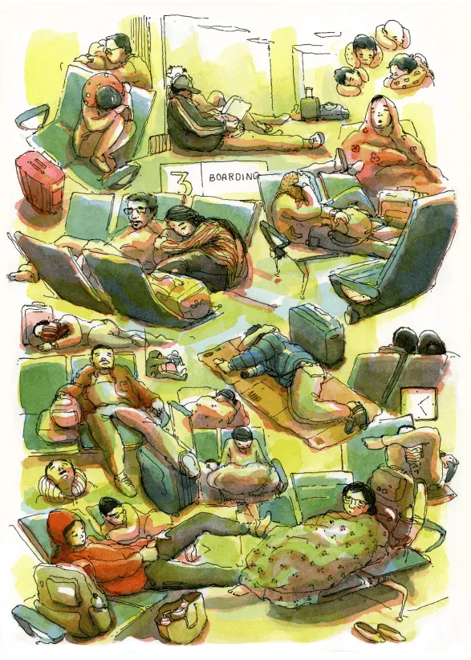
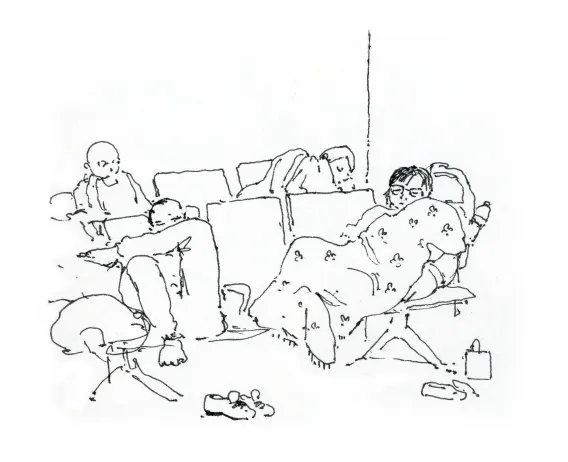
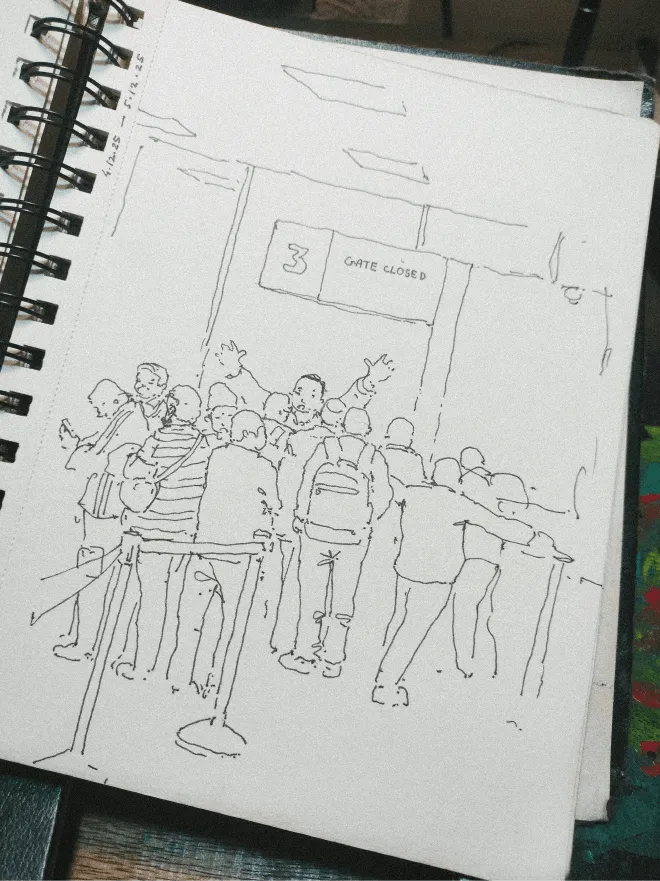
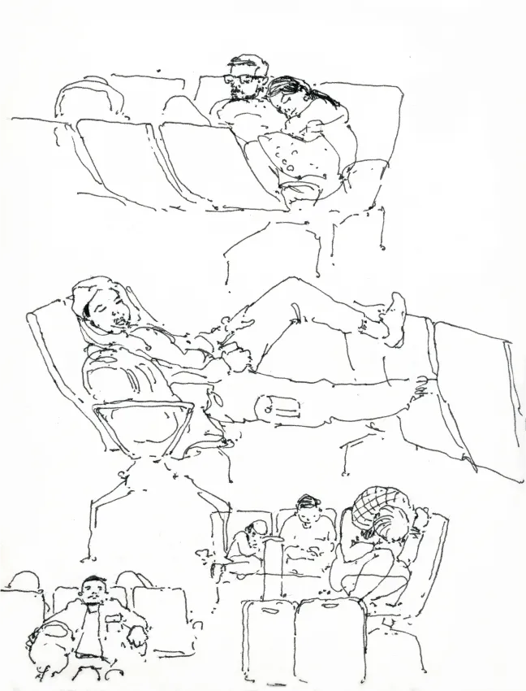

airports
"Therefore rejoice, you, the living, in your lovely warm bed, until Lethe's cold wave wets your fleeing foot."
"Therefore rejoice, you, the living, in your lovely warm bed, until Lethe's cold wave wets your fleeing foot."





Just a metaphor.